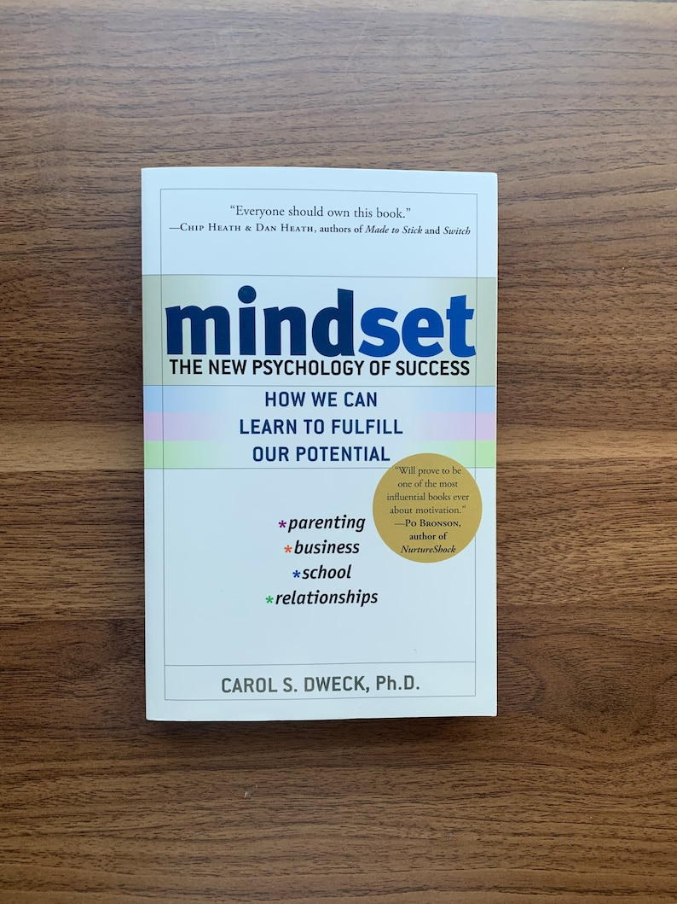

Library › Psychology & People
Mindset — Summary & Key Lessons

The new psychology of success — how a single belief about ability changes learning, love, business, and parenting.
📖 OPEN THE FULL INTERACTIVE BREAKDOWN →🌐 Read it in Hindi, Hinglish, Gujarati, Tamil & 22 more languages — free, with audio.
💡 The Big Idea
Stanford psychologist Dweck spent decades on one deceptively simple question: what do people believe about ability? FIXED-mindset people believe qualities are carved in stone — so life becomes an endless audition to prove talent and hide deficiency, effort feels shameful ('if you were smart, you wouldn't need to try'), and setbacks are verdicts. GROWTH-mindset people believe abilities are developable — so challenges are nutrition, effort is the path, criticism is information, and others' success is inspiration. The kicker: mindsets are themselves beliefs, and beliefs can be changed. From praise that poisons children to CEOs who destroy companies protecting their genius, the book maps where each mindset leads — and how to move.
🧠 The 6 Key Lessons
Lesson 1: The Two Mindsets: Prove vs. Improve
Chapters 1–2: The Mindsets / Inside the Mindsets
The fork in the road is a belief: are your abilities fixed traits or developable qualities? From that single belief cascade two different worlds. Fixed: every situation is evaluated — will I succeed or fail? look smart or dumb? be accepted or rejected? — so risk is avoided, effort is stigma, and one failure can become identity ('I AM a failure'). Growth: the same situations are curriculum — the brain-as-muscle frame makes challenge desirable, effort honorable, and failure a data point ('I FAILED' — an action, not an identity). Dweck's crucial nuance: everyone is a mixture, mindsets are domain-specific (growth about intelligence, fixed about personality, or vice versa), and the fixed mindset gets triggered — by criticism, comparison, and high-stakes moments. The skill is noticing your trigger and naming the fixed-mindset 'persona' when it shows up.
📖 Example: The ten-year-olds facing hard puzzles are the book's origin scene: confronting failure, some children collapsed — but one boy rubbed his hands, smacked his lips, and said 'I love a challenge!' Dweck describes the moment as revelatory: 'I always thought you… Read the full example →
⚡ Do this: Find your triggers: recall the last time you avoided a challenge, hid a mistake, or felt threatened by someone's success. Name the fixed-mindset persona that took over (give it an actual name). Next trigger, greet it — then choose the growth response on purpose.
Lesson 2: The Peril of Praise: 'Smart' Is a Trap
Chapters 3, 7: Ability and Accomplishment / Parents, Teachers, Coaches
Dweck's most famous experiments detonated a parenting orthodoxy: praising ABILITY ('you're so smart!') pushes children INTO the fixed mindset — after one round of intelligence praise, kids chose easier follow-up tasks (protect the label), enjoyed hard problems less, performed worse, and 40% LIED about their scores afterward. Praising PROCESS ('you worked hard, tried good strategies, stuck with it') produced the opposite: harder task choices, resilience, improvement, honesty. The principle generalizes to adults and organizations: labels — positive ones included — convert performance into identity-defense. The refinement Dweck insists on (against 'false growth mindset' misuses): process praise isn't praising effort that isn't there, and it's not 'everyone's wonderful' — it ties recognition to strategies, choices, progress, and learning, and treats unproductive effort as a signal to change strategy, not a virtue in itself.
📖 Example: The core study: hundreds of adolescents, one puzzle round, one sentence of praise — 'you must be smart at this' vs. 'you must have worked hard.' That single sentence forked everything downstream: task choice, persistence, enjoyment, performance, and honesty.… Read the full example →
⚡ Do this: Rewrite your praise vocabulary — for kids, reports, and yourself: replace every trait compliment ('brilliant,' 'natural,' 'so talented') with a process observation ('the way you approached X,' 'you changed strategies when Y failed'). Do it for your self-talk first: after your next win, name the process, not the gift.
Lesson 3: Business: When Genius CEOs Kill Companies
Chapter 5: Business — Mindset and Leadership
Companies have mindsets too. Fixed-mindset leaders — Dweck's gallery includes Iacocca's later years, Enron's 'talent' cult, and Albert Dunlap — need to be the smartest in the room: they surround themselves with validators, shoot messengers, hoard credit, blame scapegoats, and manage for the quarterly verdict on their genius rather than the company's long arc. Growth-mindset leaders — Anne Mulcahy (Xerox), Lou Gerstner (IBM), Jack Welch at his best — ask questions, confront brutal facts, develop people, credit teams, and treat the company as something to BUILD rather than a monument to themselves. The research scaled: employees in fixed-mindset companies report more secrecy, cheating, and turf wars; in growth-mindset companies, more trust, ownership, and innovation. 'Groupthink,' too, is fixed mindset at committee scale — unanimity as proof of collective brilliance.
📖 Example: Enron is the set-piece: McKinsey's 'war for talent' doctrine institutionalized the fixed mindset — hire geniuses, rank ruthlessly, and never make them feel ordinary. The result was a culture where admitting error was career death, so errors were hidden, then… Read the full example →
⚡ Do this: Audit your leadership (or your employer) with three questions: What happens here to the bearer of bad news? Who gets credit by default? Is development budgeted like it matters? If you lead: respond to this week's first mistake with 'what did we learn and what changes?' — publicly.
Lesson 4: Relationships: The Fixed-Mindset Fairy Tale
Chapter 6: Relationships — Mindsets in Love
The fixed mindset writes a specific romance script: if we're 'meant to be,' everything should be effortless — compatibility is a fixed fact, mind-reading should be automatic ('if I have to TELL you, it doesn't count'), and every conflict is diagnostic of doom. The growth version treats love as the third entity both partners develop: differences are expected, communication is a skill, and conflicts are problems to solve rather than character verdicts. Same fork with blame: fixed-mindset partners must assign flaw (mine or yours — and yours is safer), so grievances calcify into contempt; growth partners can address behavior without indicting being. Dweck extends it to friendship and social courage: shyness hits both mindsets, but growth-mindset shy people let themselves be awkward WHILE engaging — the willingness to be a beginner applies to people skills too.
📖 Example: Dweck's counseling files: the couple where he believed asking for help meant incompetence and she believed effortful love wasn't love — both scripts fixed, both partners lonely inside a workable marriage. Versus the pairs who treated their gaps as the… Read the full example →
⚡ Do this: Replace the verdict question with the growth question in your closest relationship: after the next friction, ask 'what skill would have made that go better, and whose turn is it to practice?' Say one need out loud this week that you've been expecting to be mind-read.
Lesson 5: Changing Mindsets: The Journey to Growth
Chapter 8: Changing Mindsets
Mindsets change — that's the point of the book — but not by slogan. Dweck's honest sequence: ACCEPT (everyone has fixed-mindset triggers; pretending otherwise is the 'false growth mindset'), OBSERVE (learn exactly what summons your fixed persona — criticism? deadlines? a rival's win?), NAME it (externalizing the persona creates the gap where choice lives), and EDUCATE it (talk back: take the challenge WITH the persona's fears acknowledged, and let outcomes retrain the belief). The engine underneath is the brain science she helped popularize: neuroplasticity means ability genuinely grows with use — students taught just this single fact (in 'Brainology' interventions) rebounded in grades versus controls. And the final vaccination: growth mindset is not about promising everyone Einstein-hood; it's the claim that EVERYONE's true potential is unknowable in advance — so verdicts are always premature.
📖 Example: The junior-high intervention: struggling students split into two workshops — study skills only, versus study skills plus one lesson: 'the brain is like a muscle; intelligence is developable.' The study-skills-only group kept sliding; the mindset group… Read the full example →
⚡ Do this: Run the four steps on your loudest trigger this month: accept it exists, log what summons it, name the persona, and take one avoided challenge while narrating the growth counter-script. Then teach the brain-as-muscle fact to one person — teaching it is the strongest known way to install it.
Lesson 6: The Mindset of the Champion: Growth Is the Goal, Not the Win
Part 2: The Inside
Dweck's portrait of champions with growth mindset: they love learning more than winning — which is exactly why they win more. For them, every game is data: wins confirm progress, losses reveal what to improve. The fixed-mindset champion protects their record and fears the challenge that might tarnish it; the growth champion actively seeks the hardest opponents because the challenge is the growth. The distinction shows up in practice: after a loss, fixed minds make excuses, growth minds study the tape. The lesson: attach your identity to improvement, not outcomes, and outcomes improve as a side effect — because you'll take the risks and do the work that fixed minds avoid.
📖 Example: Dweck describes how Michael Jordan treated every loss and every slight as fuel for practice — he was famously cut from his high school team and used it as a growth signal, not an identity verdict. The response to the setback, not the setback, made the career. Read the full example →
⚡ Do this: After your next loss or setback, write three sentences of 'tape study': what did it teach, what will you practise, and what will you try differently. Skip the excuses entirely.
✅ 5-Step Action Plan
- Name your fixed-mindset persona and its top two triggers.
- Convert all praise — outgoing and self-directed — to process language.
- Audit your team/company: messengers, credit, development.
- Swap relationship verdicts for skill questions; voice one silent need.
- Take one avoided challenge with the persona named and answered.
⚠️ When This Doesn't Work
A growth mindset without a growth strategy is just enthusiasm. Micromax had the most growth-minded founder team in Indian tech — they learned, pivoted, launched — but they kept applying their growth to a commodity phone market that platform shifts were destroying. Believing you can improve does not tell you what to improve. The mindset is the engine; you still need a map, and sometimes the growth move is leaving the road you're on.
💀 The Graveyard Proves It
📴 Micromax — India's #1 Phone Brand Missed One Announcement. Burn: #1 in India → under 1% share. Read the full case study →
💬 Best Quotes from Mindset
- “Becoming is better than being.”
- “Why waste time proving over and over how great you are, when you could be getting better?”
- “The view you adopt for yourself profoundly affects the way you lead your life.”
Interactive version: mark lessons as read, listen in your language, share quote cards.